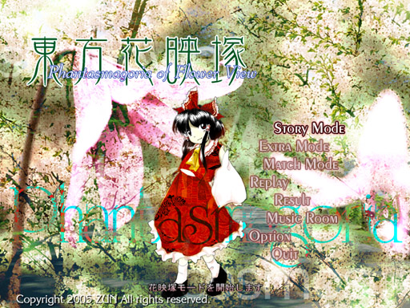

――幻想郷が蘇生した。 冬の白色は春の日差しに彩られ、幻想郷は完全に生の色を取り戻していた。 冬の間眠っていた色の力が目覚め、幻想郷を覆う。 花と同時に妖精達も騒がしくなる。 その異常な美しさの自然は、幻想郷に住む者全てを驚かせた。 彼女たちはいち早くその異変に気が付いた。 桜、向日葵、野菊、桔梗…… まだ春だというのに、一年中全ての花が同時に咲き出していたのだ。 多くの人間と全ての妖精は、自然からのプレゼントと受け取って暫くその光景に浮かれていた。 だが、幻想郷でもっとも暢気な人間は珍しくあわてていた。 「こんなに判りやすい異変じゃあ、早く解決しないといけないわ。 じゃないと、私が怠けているってみんなに言っているようなもんじゃない！」 いつも通り、当てもなく勘で神社を飛び出したのだった。 幻想郷自体が蘇生した。 彼女たちも自然の一部。妖精の力は自然の力。自然には抗えないことを、皆知っていた。 東方花映塚 〜 Phantasmagoria of Flower View. |

| 東方Project 第九弾!! とうほうかえいづか 「東方花映塚 〜 Phantasmagoria of Flower View.」は対戦している振りをする弾幕シューティングです。 ティンクルスタースプライツの皮を被った変な弾幕ゲームなのです。それだと思って手を出すとえらい目に遭うおまけ付き 妖精が蠢く幻想郷の、最も暢気な人間と最も花に浮かれた妖怪達の弾幕開花宣言。 敵を倒す前に倒されるな！ 攻撃するなら避けろ！！ 幻想を見る人には、鋭い攻撃よりジェントルメンな回避が良く似合う。それはもう消極的な ＊このゲームには過激な弾幕シーンが含まれております 小さなお子様や、弾幕アレルギーの方はアレしてください。 |
| ・バックストーリー |
| ・スナップショット |
| ・マニュアル |
| ・ ダウンロード（体験版、アップデートパッチ） |
| 今後の予定 | |
|---|---|
| ○体験版PlusCD | 5/04「博麗神社 例大祭」にて配布予定 |
| ○体験版ダウンロード | 6/11更新ダウンロードページ |
| ○製品版 | 夏コミにて発表予定、その後、各同人ショップでも委託販売が開始する予定です。 |
| 体験版と製品版の違い 体験版は３面までしか遊べません。 使用できるキャラは５人のみ。対戦も可能です。 ＊また、ゲームの仕様、ノリ、諸々は、何の予告もなく大変更する事もあります | |
| 体験版Plusとダウンロード版体験版の違い ＢＧＭが完全に利用できるのは体験版Plusのみとなります。 ダウンロード版の体験版は、曲はMidiしか使用できません。 なお、体験版Plusの曲データは、ダウンロード版体験版にも使用できます。 | |
| 動作環境 | |
|---|---|
| 必須環境 | |
| ＯＳ | Windows 2000/XP なお、DirectX 8.0 以上がインストールされていること |
| ＣＰＵ | Pentium 以降（もしくは互換）のCPU （推奨 800MHz以上） |
| メインメモリ | 空き実メモリ 128M以上必要 |
| ビデオカード | DirectX8.0以上の DirectGraphic 対応の高速なビデオカード(必須 VRAM32M以上) 今のところ正常に動くことが確認取れているビデオカード ・nVIDIA GeForce シリーズ ・ATI RADEON シリーズ 等 |
| 推奨環境 | |
| サウンド | Direct Sound対応のサウンドカード （BGMに MIDIを使用する場合）sc-88Pro(Roland)もしくは上位の MIDI音源 |
| その他 | パッドコントローラ 高い暢気さ ある程度の人生を楽しむ余裕 |